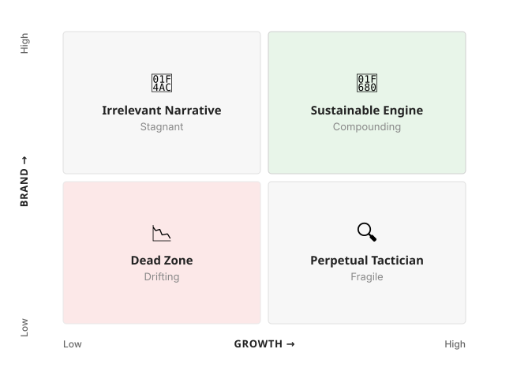

The Endgame of Growth
February 2026
A decade of scaling startups has a way of stripping the romance out of "growth." It's often less about clever viral tactics and more about the unglamorous work that makes the business go: what you measure, what you tolerate, what you ship, and what you refuse to do.
When I recently reread the mandates I wrote as VP of Growth, something jumped out: they weren't really growth mandates. They were brand mandates—rules about trust, standards, and how we choose to win. That left me with a sharper question: is there an endgame to growth? If so, how—and what should founders do differently because of it?
Today, growth has become the dominant lens for marketing; brand often gets deferred. But the two are more coupled than most teams realize. Growth without brand erodes trust, making growth unsustainable. Brand without growth is narrative without distribution, making brand irrelevant. They're the same system, and running them as separate chains of command would be a lost opportunity.
First, let's clear up some definitions. People use "growth" and "brand" to mean four different things. Here's a cleaner view:
- Growth (functional): experiments and channels that move acquisition, activation, and retention in weeks, inclusive of growth marketing and product-led growth. Can we move a metric this month?
- Growth (strategic): compounding leverage over time—wedge, flywheel, expansion, moat. Does the business get stronger as it scales?
- Brand (functional): identity, narrative, messaging, campaigns, creatives, aesthetics. Are we improving perception?
- Brand (institutional): standards, constraints, quality assurance, customer experience posture, pricing integrity, decision-making, team culture. When things go wrong, do customers still believe us?
This isn't semantics. These are distinct capabilities, owners, talent profiles, failure modes. Confusing them is how teams ship noise instead of signals.
Most companies get stuck in one of two traps. They either become perpetual tacticians—optimizing metrics that read well on dashboards but don’t build position—or they reach for brand prematurely or superficially, spending on perception before product and operations can support it.

The structural tension between functional and strategic, between growth and brand, holds across industries and business models. The specific playbooks differ. What changes is the mixture and the timing, not the architecture.
If managing all four dimensions simultaneously sounds like a lot—it is. That's the name of the game. And it's precisely because these lenses are so easy to conflate and so chaotic to run even just a couple of them in parallel that most teams default to whichever one feels most urgent and let the rest atrophy. But the good news is that you don't need to get everything right at once. You need to know which lens to prioritize at each stage—and what you're building toward while you do.
Buying time
I've come to believe that the best leverage that growth tactics create isn't acquisition or retention. It's buying time.
Time for the product to mature. Time for strategic initiative to take root. Time for the brand to earn real trust—the kind of consistency that can't be shortcut and that has to compound through thousands of small, deliberate decisions. The best growth operators I've worked with understand this intuitively—they're playing a finite game in service of an infinite one.
The catch is that buying time doesn't feel like strategy. It feels like scrambling. You test channels, optimize funnels, run tight experiments. The work is fast, measurable, and even addictive. And if you let it, the means becomes the end. Time bought is only valuable if it's spent well. The difference is stark.
Wasted time shows up as rebuilding acquisition stacks every nine months because no one knew why the last one worked. It looks like constant channel resets, rebranding without fixing the product, and hiring growth talent faster than management maturity can absorb—scaling the team before the team knows how to scale.
Invested time looks different. It's codified pricing logic that holds under pressure, retention loops that compound, and CX standards that balance guardrails with judgment. Trust is built in the details: in how you handle outages, in whether the fine print matches the pitch. No amount of rebrand, campaign, or visual identity can change that. And it takes real organizational muscle to say no to revenue that violates brand integrity, and the frameworks to make that decision quickly.
Mistakes are part of the process, and that's not wasted time. But knowing what invested time looks like matters, especially at the early stage when time is scarcest and stakes highest. The patterns formed here—whether you learn to invest time or merely spend it—persist long after the urgency fades.
Building position
You've bought the time. Now what do you do with it?
Growth as a function asks: what can we do this quarter? Growth as a strategy asks: what position are we building over the next three years?
The functional work is necessary. It generates the revenue, the users, the data that make strategic bets possible. But it doesn't compound on its own. A paid acquisition channel that works today can be repriced tomorrow. A viral loop that depends on a platform can be throttled overnight. The more your growth depends on infrastructure you don't control, the more fragile it becomes. Functional growth is rented leverage. Strategic growth is owned.
The companies that endure build wedges—narrow, defensible entry points—and then expand from positions of strength. They design systems where each new user, each new use case, each new market makes the next one more inevitable. Product-led growth, when it works, is the clearest expression of this—the product itself becomes the growth motion, collapsing the distance between functional execution and strategic compounding.
But these are not quick wins. Strategic growth initiatives are slower to build, riskier to bet on, and compete directly with the functional work keeping the lights on. Starting them may feel like a distraction. The question is whether it's a distraction that compounds or one that just consumes. There's no clean test, but a useful filter: if the discomfort is about the lag rather than the logic, it's probably worth the cost.
Investing by stage
In the early stage, functional growth dominates out of necessity. You're looking for signal: does this product solve a real problem for a reachable audience? Brand, at this stage, is mostly instinct—an extension of the founders themselves. You don't have enough history for a trust system, but the decisions you make here—how you price, how you communicate, what you tolerate in the user experience—are already setting the tone. Brand is malleable and can be refined later, but go in with an MVP brand rather than no brand at all.
At the growth stage, the mixture shifts—or it should. This is the dangerous middle. The channels that got you to Series B won't guarantee category leadership. The playbook that worked at 10,000 users rarely survives ten times that. And the brand debt you deferred in the early days starts to add up. In churn you can't fully explain, in NPS scores that plateau, in a widening gap between what you promise and what users experience. Most companies I've seen stall at exactly this transition.
Here's what I've observed more than once: the dashboard says the business is scaling, but the customers say otherwise. By the time the signal is loud enough to act on, risk has hardened into reputation. A trust deficit, caught early, is recoverable. But as a founder, you're better off building the mechanisms to monitor for it than waiting for it to become obvious.
This stage is also when the aperture widens. You're evaluating expansion opportunities—direct and adjacent—for the longer term. If you've found traction, you've likely attracted competition that's heating up the space. The strategic questions multiply at exactly the moment the operational ones are hardest to manage.
By late stage, the companies that endure have earned something the others didn't: the right to let institutional brand bear the weight. Functional growth still matters, but it operates within constraints that protect the trust system—constraints that would have killed the business earlier but now define its advantage.
Channels and metrics are more steady-state. Leadership spends more time on organizational architecture—the structures, processes, and narratives that keep the company coherent as it scales. Internal storytelling becomes as important as external: does the team understand why the company makes the decisions it does, not just what those decisions are? Can new hires absorb the standards without having lived through the battles that created them?
Someone has to own institutionalization if not the founder—codifying what you've learned into systems that hold without you in the room. The founders I most admire at scale spend disproportionate time on exactly this—writing internally, codifying decisions, making the reasoning visible. The business can grow because of its constraints, not in spite of them.
None of this is a clean cut or completely linear. The stages blur. The lenses overlap. And the next phase is often being assembled before the scaffolding for it is fully in place.
The people ceiling
There's a version of this essay that stays purely structural—stages, frameworks, leverage points. But I've spent enough time coaching growth managers and advising founders to know that the real bottleneck is rarely strategic clarity. It's talent.
Each lens demands a different kind of thinking, and the gap between what the role requires and what the person has been developed to do is often the company's true growth constraint:
- Functional growth needs adaptive thinkers—people who understand why a channel or product loop works, not just that it works. Otherwise, you scale mechanisms you can't adjust when conditions change.
- Strategic growth needs systems thinkers—people who see second-order effects, feedback loops, and competitive dynamics, and who can translate that into operational instincts.
- Functional brand needs creatives connected to business reality—people who translate positioning into narrative without losing the thread. We've all seen those expensive campaigns running in a parallel universe from the product.
- Institutional brand needs institutional leaders—people with the authority and conviction to hold standards under pressure. In early stage, if this person isn't the CEO or founder, that's typically a warning sign—no one else has enough context to know where the lines are.
Culture sets the floor. Talent sets the ceiling. A strong culture can prevent the worst decisions, but it can't produce the best ones—that requires individuals who can think beyond their current frame. A leader's job is to raise both at the same time.
The people I've worked with in high-growth startups rarely have a performance problem. But the pattern I see repeatedly is a gap between the how and the why—between moving a metric and understanding what that metric is in service of. They optimize the quarter without building toward the year. They frame problems within their own domain without asking how that resonates with the rest of the organization.
There's no clean solution. Sometimes you retrain—bridge the gap through coaching, exposure, and deliberately expanding the aperture of what someone is responsible for thinking about. Sometimes you replace—bring in people who already operate at the altitude the business requires. Sometimes you redesign the org—restructure roles and reporting lines so the gap matters less. Each has costs. Most companies need some combination of all three, and the judgment lies in knowing which lever to pull for which person at which moment.
What I know for certain: you can't get business growth right if you can't get people growth right. The companies that scale well don't just have better strategies. They have people who can think at the altitude the strategy requires. Founders who treat talent development as a growth investment—not an HR line item—tend to clear the ceiling that stalls their peers.
Common pitfalls
A few patterns I've seen derail otherwise strong teams:
- Treating functional growth as the destination. When the team that was hired to buy time becomes the team that runs the show, the business optimizes for speed with no sense of where it's going. Metrics improve. Position doesn't.
- Siloing growth. When growth lives entirely inside one team, it's easy to see it as someone else's problem. At a startup with constrained resources, everyone should understand the basics of how the company grows—the value proposition, what drives acquisition, why users stay or leave. I'd go further: everyone, regardless of role or seniority, should be able to answer common customer support inquries. If you don't understand the problems your users actually have, you can't contribute to growth or protect the brand. Growth as a team sport isn't idealism. It's resource efficiency now and durability later.
- Scaling channels before the trust system can absorb them. Acquisition is easy to scale. Trust isn't. When you pour users into a product that hasn't earned their confidence, you don't get growth—you get churn with extra steps. The math catches up.
- Letting metrics dictate standards. The moment you adjust quality to hit a number, you've inverted the hierarchy. Metrics should measure whether you're meeting your standards, not define them. This is a subtle but critical distinction, and it's the one I've seen the most seasoned operators get wrong under pressure.
The tradeoff
In some markets, speed matters more than durability. When distribution compounds faster than trust can form, slowing down can mean losing outright. Early dominance, not institutional polish, decides outcomes.
This is the strongest objection to building durable systems early. Every hour spent on standards, tooling, or process can feel like an hour not spent shipping or selling. When competitors are sprinting, discipline looks like drag. But this tension is not binary.
Speed and durability are competing claims on limited attention, not opposing strategies. Resilient teams treat that pressure as a forcing function, not a choice. They find ways to move fast and quietly build underneath. They ring-fence a small, protected share of time to protect retention mechanics, pricing systems, onboarding quality, and customer experience standards. These investments rarely show up in quarterly dashboards, but they do reshape the slope of the business.
There are moments when even this discipline is impossible. Crises and platform shifts demand total focus on survival. In those periods, durability is postponed. But never abandoned. The difference is intentionality, knowing what you're trading and why, rather than letting urgency decide for you.
The endgame
So is there an endgame to growth?
Not in the sense of a finish line. But there is a phase shift—a point where the nature of growth changes fundamentally. Growth is no longer something you do to the business. It's something the business does because of what it's become. I've come to see my role in Growth as a steward supercharging the journey and safeguarding it at the same time.
Looking back at those mandates I wrote, I understand now why they read the way they did. They weren't a departure from growth. They were its logical conclusion. The rules about trust, standards, and how we choose to win weren't constraints on growth. They were the conditions that made growth sustainable.
If you're building something now, the question for you (or your Head of Growth if you're hiring) isn't whether to focus on growth or brand. It's whether you're earning the time you need, compounding your advantages, and building something that deserves to last. That's a genuinely hard thing to hold in your head while the day-to-day is pulling you in all different directions at once. But if it were simple, everyone would get it right—and they don't.